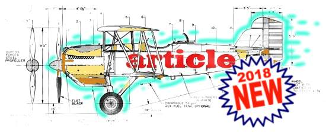

IB Docs (2) Team
IB Docs (2) Team

Text type expectations

What should we be teaching our students about the text types required under the 2018 Subject Guide?
To put it another way, how will they be expected to handle each text type in Paper 1: Productive skills - writing? Basically, what instructions do we give the students ... what plans do we provide them, so that they can construct something that will fly ?
Command of text types is assessed principally under Criterion C: Conceptual understanding (see the page Writing criteria, unpacked ). This criterion includes the following general areas:
- context, audience, purpose - normally, as set out in the question
- register and tone - generally implied by the norm in the type of text, but may be altered by the nature of the task
- conventions - the standard techniques of format, address, rhetoric, structure, etc
The task involves a "choice of text type" which demonstrates "appropriate" understanding, and handling, of the general areas. So, students have to be taught how the general areas apply to each of the text types - and then how to adapt the general characteristics of each text type to the particular requirements of each specific task / question.
Key Issue: the meaning of 'appropriate'
It would appear that the most important factor in choosing the right text type is to think about whether the text type will reach correctly the specified audience. This in turn means that students should understand where each text type is used, and for which purpose.
- To illustrate, if the task is to explain a personal experience to a friend ... and the options are # Speech; # News report; and # E-mail ... it would be inappropriate to choose the first two, and appropriate to choose the last.
Each text type page has a box entitled 'Appropriate?' - this contains guidance about how and why this text type would be 'appropriate' to particular sorts of task.
Here is an example of what the box looks like ...
Appropriate?
A blog will be appropriate if the task requires you to ... (+ explanation of when the text type would be appropriate)
Not to be confused with...
'article' or 'opinion column' or 'essay' ... (+ explanation of why these possibly similar text types would not be appropriate)
Text type pages
As you can see from the index at top left, all the text types that may be used in examinations have a dedicated page.
Each page sets out to provide brief summary notes about the likely expectations of how Conceptual understandings should be applied to each text type included in the IB-specified list of text types for exams (see the page Exam list of text types ). These notes are organised as follows:
Key features
This box provides the important elements to remember about each text type, thus -
- context, audience, purpose
- register and tone
- conventions - (the first three in the list will be the most likely to be expected in marking)
'Appropriate?'
This box contains advice about how to choose each text type as the most 'appropriate' for the task required by the question, from the choice of three presented.
In addition, the key features are developed in more detail, in this section:
Format and approach, discussed
The recognisable features of each text type have been organised according to two categories :-
Basic Format ... the most easily visible (and teachable) features of the text type - 'format' in the sense of layout, the physical organisation of the script
I list all of the common features that I can think of; not all of these would need to be present for the text type to be clearly recognisable.
Approach ... the less visible features of how the text type would normally be handled - register, author's voice and tone, address to audience, organisation of ideas, and so on.
I list major elements, in descending order of importance (most important, in my view, first). Again, not all of these need to be present - indeed in some cases, some of the approaches may be contradictory and would need to be selected according to the precise nature of the task.
The Basic Format elements can easily be taught and even the weakest students should be able to reproduce them. The Approach elements are intrinsically more difficult to teach, since they often involve quite sophisticated mental procedures - but surely students should be appropriately challenged with these.
- Finally, note that I regularly refer to 'an exam script', in the context of defining what a 'good' version of the text type should display. This is simply being realistic - the point of this list is not primarily to teach students how to write, for example, good diaries in real life, but rather how to be able to produce a realistic version of a diary in an exam.
Relevant writing purposes
Links are provided to the most useful of the skills presented in the writing purposes section, for teaching approaches, examples and models.
Resources
Finally, the following resources relevant to the text type are provided:-
* Materials & models ... blue boxes like this contain links to selected examples of each text type, elsewhere in the site
* Suggested 'new style' exam tasks ... cream boxes like this provide tasks in the format of the current Guide's assessment system - in each of these tasks, the required 'appropriate' text type is the one to which the page is dedicated.
* Recent exam tasks ('old' style) ...pink boxes like this contain examples of how each text type has been set in Paper 2.
Note - at present, all these examples are 'old style' i.e. written according to the old Paper 2 Writing which applied up to November 2019. So, you shouldn't set these as they stand for student practice purposes. However, you can adapt and re-write them, always remembering that :-
1. You need to make clear the expected audience
2. There should be three actions that the student should perform - e.g. 'describe...' + 'explain...' + 'comment...'
3. Three optional text types should be provided - chosen so that there is an appropriate text type (the one you want the students to choose) + a generally appropriate text type (one that might be more or less suitable, but not really) + an inappropriate text type (one that is evidently unsuitable for audience and purpose)
****************
NOTE
Everything in this page is 'work in progress'. Our understanding of how the handling of text types is marked will continue to evolve exam session by exam session. So, the ideas proposed in this page are carefully considered inferences - but they remain personal interpretations.
.
Key text types, listed
Click on the required text type in the list below in order to jump to the summary of expectations
** Then click on the heading of each summary to link to a page which develops the ideas in more detail
Opinion column / letter to the editor
Personal statement / cover letter
Set of instructions, guidelines
Social media posting / online forums
Article (newspaper, magazine)
context, audience, purpose -
* the context of the article will usually be set out briefly in the question: e.g the background to the subject matter of the article
* the audience will usually be indicated by where the article will be published: e.g. 'your school magazine'
* the fundamental purpose of any article is to inform or to report - but we may also include 'interest', 'explore', 'study'. Note that strong opinions or attitudes would probably not be expected - such purposes would probably come under 'opinion column' (qv)
register and tone -
* will have a semi-formal to formal register
* will have a tone appropriate to task e.g. suitably serious
conventions -
* will have a relevant headline/title
* will have an introduction intended to catch the readers’ attention
* will use techniques that engage and interest readers e.g. direct address
Blog
context, audience, purpose -
* the context will usually be set out in the question e.g. the issue which is to inspire the blog entry
* the audience may be assumed to be people interested in the subject matter OR (youngish?) internet-interested people
* the generic purpose of blogs is to interest / entertain / amuse / be provocative & stimulating - in general, NOT solemn
register and tone -
* will use a semi-formal to informal register
* the usual tone will be personal - chatty, direct and unpretentious
conventions -
* will include first person statement and/or narration
* will seek to engage the reader, eg through direct address, a lively and interesting style etc
* will use 'typical blog techniques' e.g. a provocative closing statement, leading to an invitation to comment / response
* will have an interesting, catchy title for the entry
Brochure, leaflet, pamphlet
context, audience, purpose -
* the context will usually be set out in the question e.g. the problem to which the pamphlet is going to propose a solution
* the audience will usually be pretty clearly defined by how context and purpose are linked e.g. if the context is the need for healthy exercise among young people and the purpose is to promote a new sports centre, the audience will be... young people (who may or may not be interested in exercise!)
* the basic purpose of these text types is publicity - and this can be divided broadly into 'inform' (e.g. health information) and 'promote' (e.g. selling something)... although typically both elements are required in different proportions
register and tone -
* will use a semi-formal to formal register
* the tone will tend to be simple and direct - i.e. to convey the sense of honest address
conventions -
* will have an engaging title, which attracts attention
* will identify ideas with format techniques such as sub-headings, bullet points, numbering etc
* will include practical aspects of the brochure like “contact us”, or “a phone number and/or an email address”.
* will have a short introduction and a conclusion
NOTE: Graphic design as such is not marked
Diary (private) / journal
context, audience, purpose -
* the overall context may be assumed to be the writer's own life - but the question will probably set some particular situation around which the entry should be invented e.g. 'you have had an argument with a good friend'. (In exams, whether or not the "writer's own life" is the student's real one, or is completely invented, does not matter at all - it merely has to be credible.)
* the question of 'audience' is the key distinction perceived by IB between 'diary' and 'journal' - a diary is assumed to be essentially private i.e. written for the author's eyes only; whereas a journal may be written for possibly public reading (e.g. a scientist's journal of experiments and data-collection).
* the purpose will generally be to 'record' some experiences of personal significance - but what sorts of experiences are required will be indicated in the question. One way of stating the distinction between the two text types is that a diary is anecdotal (dealing with intimate personal feelings) while a journal is intellectual (dealing with personal reactions to more public concepts and arguments).
register and tone -
* will use a generally informal register
* the tone will be personal, frank and open - e.g. emotions may be described clearly and with feeling
conventions -
* will use first person narration
* will have a closing statement to round off the entry
* will avoid self-evident explanatory phrases or sentences, e.g. will use “I saw Alicia”, not “I saw Alicia, my best friend”
* will include the date and/or day
E-mail / letter
context, audience, purpose -
* the question will usually describe a background situation, which the writer wishes to communicate to...
* ... a specified friend / acquaintance (note that e-mail tasks usually require individual communication with one person only, as opposed to some kind of general message to a collective audience)
* the purpose will usually be to express and explore personal attitudes and experience: usually of the writer, but perhaps involving advice to the reader
register and tone -
* will adopt a consistently informal register
* will adopt a lively, engaging tone and style, perhaps with some “youth-speak” eg “I’m good”, “Can’t wait” etc
conventions -
* will maintain clear sense of address to a specific person
* will have an appropriate opening salutation
* will have an appropriate closing salutation.
Formal Letter
context, audience, purpose -
* the question will usually provide the context - a background situation, which causes some kind of issue, about which the writer wishes to communicate some significant idea
* the audience will be identified, but may well not be known personally (in contrast with the usual audience of an e-mail) - the letter is likely to be addressed to a post or administrative position, rather than a known individual (as exemplified by the use of 'Dear Sir/Madam')
* the purpose will usually be to present an argument or state a position, most probably about some general social procedure or system - to illustrate, #1: complaining about poor service in a shop; or #2: suggesting how the Town Hall can serve the public better. The writer may have personal emotions to express, but these are subordinated to the impersonal technique of objective, convincing argument
register and tone -
* will adopt a consistently formal register
* will adopt a suitably serious and respectful tone
conventions -
* will have a clear sense of address to a specific person
* will have an appropriate opening salutation
* will have an appropriate closing salutation
* will clearly identify the recipient (by name, and/or address, and/or role/title etc.)
* will have a date (and sender’s address)
Essay
context, audience, purpose -
* in relation to an essay, the term 'context' may involve two elements: the general area to be discussed, and/or how the essay has been set. These may be combined (e.g. "Your English teacher has shown a video about the dangers fof online gaming, and has set an essay about the subject..."), and may include the actual title of the essay (e.g. "The dangers of online gaming are much exaggerated. Discuss"). If no title is given, the student should make one up, thus defining clearly what the essay is about.
* the audience is assumed to be educated and informed, and capable of understanding sophisticated language
* the purpose will usually be to analyse / explore / discuss the topic, as required by the question - so students should pay close attention to the 'action verbs' in the task
register and tone -
* will adopt a semi-formal to formal register
* will have an appropriately serious tone
conventions -
* will have a relevant title
* will use techniques that enable the reader to follow the arguments easily, e.g. methodical structure using cohesive devices
* will have a distinct introduction and conclusion
Interview
(It is assumed that for English B tasks, the expected type of interview will be the Embedded, not the Transcribed)
Embedded Interview
context, audience, purpose -
* the context of any interview task will usually involve who is to be interviewed, and why... and the combination of these will usually indicate the angle that the interview should take. To illustrate: "a famous musician visiting your town... interview because former student of your school... so, how did school influence his/her career?"
* the task will normally indicate where the interview is to be published, and this will define (to some extent) the audience e.g. "in your school magazine" will suggest a different audience to "a well-known online music magazine".
* as with 'Article' (qv), the prime purpose of an interview is to inform or report - but good interviews manage also to explore or even probe: we want to discover something intriguing and personal about the person interviewed, don't we?
register and tone -
* will adopt a semi-formal to formal register
* the tone should express interest in the person interviewed, and probably respect, even fascination - after all, why interview someone who is not worth the effort?
conventions -
* will have a relevant headline/title
* will use a style aimed at involving and interesting the reader
* will refer to the interview, including direct quotations
* will have an introduction and a conclusion
NOTE: interview tasks will usually not be a verbatim transcript - but this has not been ruled out by IB
News report
context, audience, purpose -
* in a way, the 'context' of a news report is actually the point of a news report, its main content - a news report describes and explains the very context that makes it necessary. In exams, the task will describe some kind of general context or situation, and the student will have to invent the specific story and concrete details
* as with most Media text types, where the report is going to be published will define the expected audience - the more 'serious' the publication venue, the more sophisticated the audience should be assumed to be
* evidently, the prime purpose of a news report is to inform, factually and objectively - although almost always there will be some subjective valuation, indicating why the facts of the story are of importance
register and tone -
* will have a semi-formal to formal register
* will have a generally impersonal tone, and use a neutral/objective style (eg presenting ideas without personal opinion of the writer)
conventions -
* will have a title/headline
* will use a neutral/objective style e.g. presenting ideas with only minimal embellishment (if any)
* will have a clearly structured layout (eg sub-headings, short brief paragraphs/sections, etc)
Opinion column / letter to the editor
Opinion column
context, audience, purpose -
* the question will usually provide the context - a general situation, which results some kind of issue, on which the writer chooses to take a particular stance or judgement
* the audience will be defined by the publication context - but can also be assumed to be reasonably informed about the issue in question, and to have the developed intelligence and the language skills to be able to handle quite complex argument
* the purpose of such columns is to discuss in a provocative and stimulating way - and explore the issue in some depth
register and tone -
* will have a semi-formal to formal register
* will have a tone appropriate to task e.g. suitably serious... or possibly, provocative and amusing, depending on the approach to the task required, or taken
conventions -
* will have a relevant headline/title
* will have an introduction intended to catch the readers’ attention
* will use techniques that engage and interest readers e.g. direct address
* will probably use first-person statement, but not necessarily
Letter to the Editor
context, audience, purpose -
* the question will usually provide the context: typically, that the the Editor has published something with which the writer of the letter strongly agrees/disagrees
* the principal audience is the Editor, to whom the letter should be clearly addressed. However, there is an assumption that the letter may be published, and so the letter may also be written so as to be persuasive to the general reader
* the prime purpose of such a Letter is to present the writer's particular, personal point of view - as persuasively and convincingly as possible, and probably in contrast to other controversial points of view
register and tone -
* will adopt a semi-formal to formal register
* will adopt an appropriately serious tone
conventions -
* will refer to the original article/issue raised
* will set out to give interesting opinions in an engaging style
* will include appropriate opening and closing salutations
Personal statement / cover letter
Personal statement
context, audience, purpose -
* A 'personal statement' is understood to be a specific type of essay generally requested of an applicant (e.g. a student applying to university / scholarship / programme; or a professional for a job). The subject matter, and approach to be taken, will be given in the task - typically, to discuss personal responses to a particular moral situation, or to write something generally autobiographical
* as with any essay, the audience is assumed to be educated and informed, and capable of understanding sophisticated language
* the purpose is actually to display clear thinking and effective argument, in order to impress and be successful in the application. In order to impress, one should simply write a convincing Essay (qv) or a stimulating Opinion Column (qv), depending on the requirements of the actual task
register and tone -
* will adopt a semi-formal to formal register
* will have an appropriately serious tone
conventions -
* will have a relevant title
* will use a style that arouses interest in the reader
* will have a clear and interesting introduction and conclusion
Cover letter
context, audience, purpose -
* the question / task will explain the context - i.e. what needs to be 'covered' and why.
* as with the Formal Letter, the audience will be identified, but may well not be known personally - the letter is most likely to be addressed to a post or administrative position, rather than a known individual (as exemplified by the use of 'Dear Sir/Madam')
* presumably, the purpose is to introduce other enclosed or attached materials, and to relate them to whatever is the overall purpose of the correspondence (... but all this seems to require an improbable amount of invention, in my view! How likely is this text type?)
register and tone -
* will adopt a consistently formal register
* will adopt a suitably serious and respectful tone
conventions -
* will have a clear sense of address to a specific person
* will have an appropriate opening salutation
* will have an appropriate closing salutation
Proposal
context, audience, purpose -
* the context will be explained in the question - at least, the basic background, since the main content of the proposal itself will be what the student will have to invent, based on that basic background
* the audience will, again, be specified in the question - i.e. the specific person or group of people to whom the proposal is to be addressed. Close attention should be paid to the target audience, since a key feature of a good proposal is that it is adjusted to appeal to the intended recipients
* the purpose will be defined by the context, very largely - typically, a problem exists, and so the purpose of the proposal is to solve the problem. In order to do this, a good proposal needs to be (1) relevant; (2) practical; and (3) attractive - all those aspects need to be included.
register and tone -
* will be expressed in a formal register, with perhaps semi-formal touches
* will have a tone which aims to be objectively authoritative, but also subjectively enthusiastic
conventions -
* will use a style aimed to persuade a specified audience
* will have a title which summarises the overall subject
* will set out the text clearly using features such as headings, short clear paragraphs, sections identified by letters/numbers/bullets, insetting etc.
* will have an introduction and a conclusion
NOTE: the proposal may be presented within the framework of a letter / email - provided the features above are present.
Report (official)
context, audience, purpose -
* the basic context will be explained in the question - and the student will then have to invent the details of the report, expanding on the basic background provided.
* the audience will, again, be specified in the question i.e. the specific person or group of people who have asked for the report. Ideally, information should be given in the question about why the report is needed, and what kind of information is expected.
* the fundamental purpose is to provide an objective, reliable account of some situation or event - methodically, clearly and efficiently. Personal and subjective reactions would not be considered appropriate.
register and tone -
* will adopt a generally formal register
* will have a tone which aims to be impersonally authoritative
conventions -
* will have a title
* will use a neutral/objective style (eg presents ideas and facts plainly)
* will have a clearly structured layout (eg a clear introduction, sub-headings, short brief paragraphs/sections, etc)
* will have a conclusion; or a recommendation if this has been required.
NOTE: an official report may be presented within the framework of a letter / email - provided the features above are present.
Review
context, audience, purpose -
* the question is likely to propose a general context (e.g."a recently released film... which you love / hate...") - but the review itself should contain informative context (invented) about the specific subject of the review
* the audience will usually be decided by where the article will be published: e.g. 'your school magazine'
* the prime purpose of a review is to stimulate interest ... then to inform ... and finally to offer some kind of judgement (although this is likely to be a continuation of the purpose of stimulating interest)
register and tone -
* will adopt a semi-formal register
* will use a tone and style intended to engage the reader
conventions -
* will include the name of the reviewer
* will have an attractive, catchy title
* will use a style which will attract and interest the reader
Set of instructions, guidelines
context, audience, purpose -
* the question will set up a context that requires telling people exactly what to do in precisely which circumstances: such a context will probably be fairly commonplace, but will require thoughtful and detailed analysis of what is required
* the audience will be specified in the task, but is likely to be the Average family - competent in language and understanding, but not necessarily very sophisticated
* the purpose of both of these text types is the same: to analyse behaviour in a given situation, in order to break it down into clear and detailed advice - with the difference that the 'set of instructions' will follow a step-by-step sequence, whereas guidelines will attempt to give a coherent overview of more generalised advice
register and tone -
* will adopt a semi-formal register
* will adopt a tone which is direct, clear and supportive
conventions -
* will have a clear and focused heading / title
* will include a short introduction and conclusion
* will set out the guidelines clearly, using techniques such as bullets, sub-headings, numbering, etc
* will directly address the intended audience
Social media posting / online forums
context, audience, purpose -
* the question will set up a context by explaining what sort of social media or what sort of online forum is involved - this will probably mean defining some sort of 'special interests' forum, concerned with a particular subject area
* the audience is likely to be specified by the kind of media/forum. If this is a special interest forum, it may be assumed that the audience is informed and familiar with subject-specific terminology .... otherwise, one assumes that the audience will be the Average Internaut - competent in language and understanding, but not necessarily very sophisticated
* it would seem that the purpose of these two text types will be very similar: to make a public, online statement about one's personal stance / attitude / knowledge AND/OR to respond to / comment on other people's postings
register and tone -
* will adopt an informal to semi-formal register
* will adopt a tone which is lively and personal, direct and clear
conventions -
* will include first person statement and/or narration
* will seek to engage the reader, eg through direct address, a lively and interesting style etc
* will use 'typical forum techniques' e.g. references to other postings; comments about other members of the forum; etc
NOTE: do not worry that most forum postings are short: for the purpose of exam tasks, write as many words as is required by the exam rules, whether this is realistic or not. IN ADDITION: tasks will most probably not require writing a 'dialogue' between several different posts - but this has not been ruled out by IB.
Speech, presentation, debate
context, audience, purpose -
* the context will describe a situation in which a particular type of message is to be communicated orally - this situation will not only specify the type of audience, but also the expected behaviour of the audience (e.g. whether the audience expects simply to be informed, or to be challenged, or required to make a choice...etc). The subject matter, and how it is best presented, will also be influenced by this general context
* the audience can generally be assumed to be reasonably educated and informed, and capable of understanding sophisticated language (unless some particular audience is specified in the task)
* the purpose of the text will be some mixture of 'inform' and 'persuade' (with perhaps a good dash of 'amuse & entertain' for rhetorical purposes!)
register and tone -
* will use a semi-formal to informal register
* will have an appropriately serious tone
conventions -
* will address the audience and keep contact with them throughout (eg use of “we” and “you” etc)
* will set out to catch the audience’s attention at the beginning, and leave a clear impression at the end
* will include elements of speech rhetoric eg rhetorical questions, repetition etc.
*************